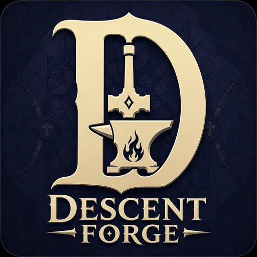
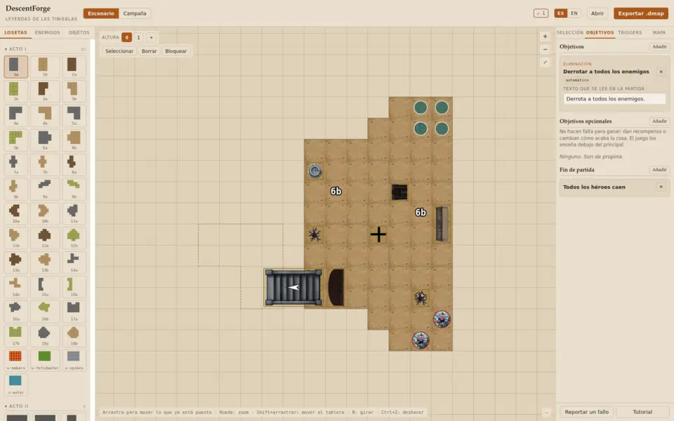
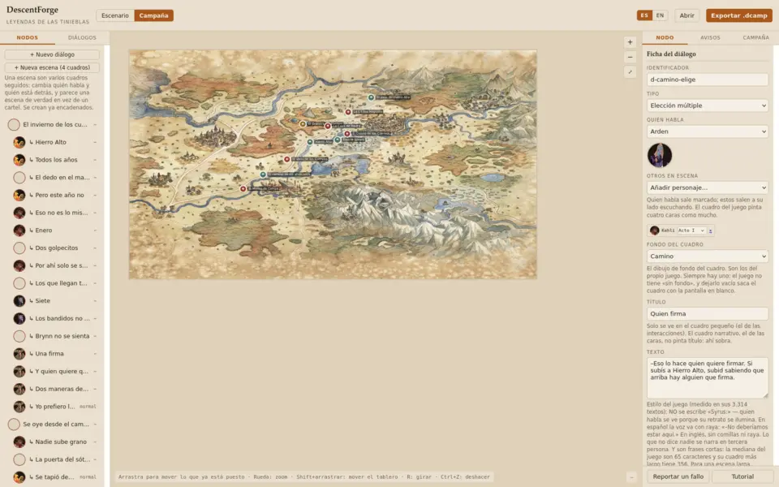

Crea tus propias misiones para Descent: Leyendas de las Tinieblas, y juégalas en la aplicación oficial.
Un editor que se abre en el navegador y un mod que enseña a la aplicación a leer lo que has hecho. Tu tablero, tus enemigos, tus héroes, tus leyes. La caja se acaba; tu leyenda, no. Que empiece la epopeya.


Descent: Leyendas de las Tinieblas es un juego de mesa con una aplicación que lleva la partida. La caja trae dieciséis misiones; cuando cae la última, se apagan las antorchas. DescentForge existe para volver a encenderlas: gestas nuevas, enemigos nuevos y muchas más noches heroicas alrededor de la mesa.
Montas el tablero con las losetas de tu caja, colocas los enemigos y el terreno, escribes los objetivos y dices qué pasa cuando: «al cruzar esa puerta, salen dos lobos». Se guarda como un archivo pequeño que puedes pasarle a quien quieras.
La aplicación oficial no sabe leer tus misiones. El mod le enseña: monta el escenario, saca los enemigos, lleva la cuenta de los objetivos y ejecuta tus disparadores. Usa las mismas ventanas, las mismas cartas y las mismas voces que el juego.
Dos programas y un archivo entre ellos. Uno sirve para crear la misión; el otro, para jugarla dentro de la aplicación oficial. No se hablan entre sí: lo único que viaja es el archivo que exportas.
Es un solo archivo HTML: se abre en el navegador y funciona sin instalar nada y sin conexión. Montas el tablero con las losetas de tu caja, colocas enemigos y terreno, escribes los objetivos y dices qué pasa cuando. Todo se hace con la interfaz — si algo no se puede hacer pulsando, es que falta en el editor.
Las losetas con su forma real, medida contra el juego. Suelos, alfombras, agua, lava y varias alturas. El editor te avisa si te pasas de lo que trae la caja o si usas piezas del Acto II.
Todos los del juego, con sus niveles de dificultad reales, sus rasgos, sus debilidades y sus resistencias. Y el aviso de cuántas miniaturas trae la caja, para que no pidas cinco lobos si vienen cuatro.
Cien objetivos y doce formas de perder, sacados de contar lo que hacen las misiones oficiales. El editor te dice cuáles juzga la aplicación sola y cuáles se declaran en la mesa.
Una frase de tres partes: cuándo pasa algo, solo si se cumple tal cosa, entonces haz esto. Con eso están hechas las dieciséis misiones del juego. Y veinticuatro plantillas listas para las formas que más se repiten.
Varios escenarios enhebrados sobre el mapa del mundo, con conversaciones entre medias, decisiones que ramifican, recompensas y una tienda. Como un acto del juego, hecho por ti.
No hay manual que leer: el tutorial va señalando el botón que toca sobre la propia interfaz y espera a que lo pulses. Un escenario entero y una campaña entera, paso a paso.
Elige qué vas a crear antes de poner una loseta: Supervivencia por oleadas, Cacería de un jefe (o varios seguidos), Atraco, Defensa o Expedición con rutas. Contestas unas pocas preguntas y el guion se monta solo.
Se instala solo, sin cargadores externos ni programas de por medio. Añade un botón a la pantalla principal del juego y no toca nada más.
Te dice qué losetas poner y dónde, coloca el terreno y saca a los enemigos con sus cartas y sus cifras. Y en el mismo orden que el juego: primero la sala amueblada y después la gente, para que no tengas que levantar nada de la mesa.
Todo lo que sale en pantalla es del propio juego: sus cuadros de diálogo, sus tiradas, su cartel de botín, su barra de héroes. El mod no dibuja ni una ventana nueva, así que una misión tuya se ve y se juega exactamente igual que una de la caja.
Los mismos que el juego, y sigue al idioma que tengas puesto en él, no al del sistema. Lo que escribas tú se enseña tal cual.
La campaña oficial se juega igual, y el progreso de las campañas de la comunidad se guarda aparte, junto a sus archivos. Desinstalar el mod deja el juego como estaba.
Tres pasos. El editor y el juego no se hablan entre ellos: lo que viaja es un archivo.
En el editor, en tu navegador. Al terminar pulsas «Exportar» y te bajas un archivo
.dmap (un escenario) o .dcamp (una campaña).
Copias el archivo a la carpeta de mapas del juego. El propio mod trae un explorador para añadirlos desde dentro, sin buscar carpetas a mano.
Abres el juego, pulsas «Mapas de comunidad», eliges tus héroes y a jugar. Monta tu tablero en la mesa siguiendo lo que te dice y adelante.
Un sitio donde subir tus misiones, buscarlas, votarlas y descargarlas de un clic. Todavía no está hecho — la página cuenta qué traerá y qué falta por resolver.
Dos cosas distintas: el editor sirve para crear y funciona en cualquier ordenador; el mod hace falta para jugar lo que crees, y ese sí toca la carpeta del juego.
Windows · macOS · Linux — no hace falta instalar nada
Windows · Linux (Steam / Proton)
7,3 MB · Windows 64 bits · sha256 1a510435…085c6e
La primera vez Windows avisa de «editor desconocido»: el programa no está firmado. «Más información» → «Ejecutar de todas formas».
Necesitas tener el juego. DescentForge no incluye Descent: Leyendas de las Tinieblas ni lo sustituye: es una herramienta para quien ya lo tiene y quiere más misiones.
DescentForge es gratis y entero: no hay anuncios ni ninguna parte de pago, y no hay nada que desbloquear. Se aceptan donaciones voluntarias para agradecer el trabajo, pero no dan acceso a nada. Lo que sí hace falta es el juego, porque esto es una herramienta para él: sin la caja no hay tablero que montar ni figuras que mover.
No debería. La campaña oficial se juega igual, las campañas de la comunidad guardan su progreso en su propia carpeta y el mod se puede desinstalar dejando el juego como estaba. Aun así, si tienes una partida a la que le tengas cariño, haz copia antes: es un proyecto de aficionados.
Sí. El editor va suelto en cualquier ordenador y hasta en el navegador del móvil. El mod solo hace falta para jugar lo que has hecho.
El editor, en español e inglés. El mod, en los trece idiomas del juego, y sigue al que tengas puesto en él. Lo que escribas tú sale tal cual.
Sí, son archivos tuyos y los pasas como quieras. La galería para subirlas y votarlas está por hacer (escenarios de la comunidad); mientras tanto sirve cualquier sitio donde se comparta un archivo.